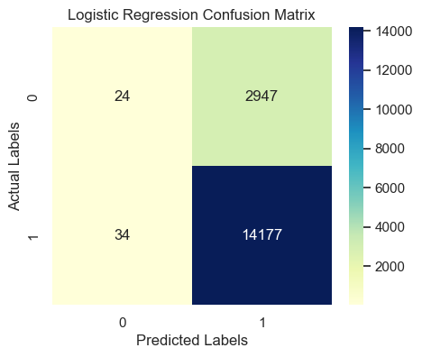
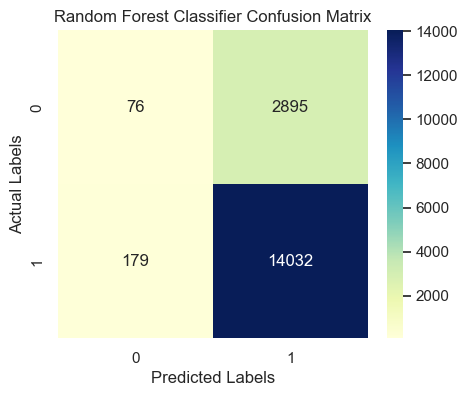

Introduction
In Week 6, the focus shifts from regression (predicting continuous values) to classification (predicting categorical outcomes). You will build and evaluate supervised learning models that classify customer satisfaction levels (CSAT) into binary or multi-class categories. This week’s task continues from the previous regression milestone and introduces Logistic Regression and Random Forest Classifier to predict whether a customer is satisfied (CSAT ≥ 4) or not (CSAT < 4).
Objective
The goal of Week 6 is to:
- Transform the CSAT Score into categorical labels for classification.
- Train Logistic Regression and Random Forest models to predict customer satisfaction categories.
- Compare the models using evaluation metrics such as: Accuracy, Precision, Recall, F1-Score.
- Visualize and interpret the model results using a confusion matrix and performance comparison chart.
Key Steps in the Week 6 Task
- Data Preprocessing
Remove irrelevant identifiers such as Customer_ID, Order_ID, Product_ID.
Handle missing values:
- Fill numeric columns with median values.
- Encode categorical variables using One-Hot Encoding.
Create a binary target variable CSAT_Category:df['CSAT_Category'] = df['CSAT Score'].apply(lambda x: 1 if x >= 4 else 0)
1 → Satisfied customer
0 → Unsatisfied customer - Feature and Target Selection
Features (X): All numeric and encoded variables except CSAT Score and CSAT_Category.
Target (y): CSAT_Category. - Train/Test Split
Split the dataset into:
Training set: 80% of the data
Testing set: 20% of the data
Ensures unbiased model evaluation. - Feature Scaling
Standardize numeric features using:
StandardScaler()
Scaling ensures balanced feature influence, especially for Logistic Regression. - Model Training
Logistic Regression:
A linear model used for binary classification. Outputs probabilities of belonging to each class.
Formula:P(Y=1) = 1 / (1 + e^{-(β0 + β1 x1 + β2 x2 + ... + βn xn)})
Random Forest Classifier:
An ensemble of multiple decision trees. Captures complex, non-linear patterns. Reduces overfitting and improves predictive performance.
Dataset Preview (First 10 Rows)
| Unique id | channel_name | category | Sub-category | Customer Remarks | Order_id | order_date_time | Issue_reported at | issue_responded | Survey_response_Date | Customer_City | Product_category | Item_price | connected_handling_time | Agent_name | Supervisor | Manager | Tenure Bucket | Agent Shift | CSAT Score |
|---|---|---|---|---|---|---|---|---|---|---|---|---|---|---|---|---|---|---|---|
| 7e9ae164-6a8b-4521-a2d4-58f7c9fff13f | Outcall | Product Queries | Life Insurance | NaN | c27c9bb4-fa36-4140-9f1f-21009254ffdb | NaN | 01/08/2023 11:13 | 01/08/2023 11:47 | 01-Aug-23 | NaN | NaN | NaN | NaN | Richard Buchanan | Mason Gupta | Jennifer Nguyen | On Job Training | Morning | 5 |
| b07ec1b0-f376-43b6-86df-ec03da3b2e16 | Outcall | Product Queries | Product Specific Information | NaN | d406b0c7-ce17-4654-b9de-f08d421254bd | NaN | 01/08/2023 12:52 | 01/08/2023 12:54 | 01-Aug-23 | NaN | NaN | NaN | NaN | Vicki Collins | Dylan Kim | Michael Lee | >90 | Morning | 5 |
| 200814dd-27c7-4149-ba2b-bd3af3092880 | Inbound | Order Related | Installation/demo | NaN | c273368d-b961-44cb-beaf-62d6fd6c00d5 | NaN | 01/08/2023 20:16 | 01/08/2023 20:38 | 01-Aug-23 | NaN | NaN | NaN | NaN | Duane Norman | Jackson Park | William Kim | On Job Training | Evening | 5 |
| eb0d3e53-c1ca-42d3-8486-e42c8d622135 | Inbound | Returns | Reverse Pickup Enquiry | NaN | 5aed0059-55a4-4ec6-bb54-97942092020a | NaN | 01/08/2023 20:56 | 01/08/2023 21:16 | 01-Aug-23 | NaN | NaN | NaN | NaN | Patrick Flores | Olivia Wang | John Smith | >90 | Evening | 5 |
| ba903143-1e54-406c-b969-46c52f92e5df | Inbound | Cancellation | Not Needed | NaN | e8bed5a9-6933-4aff-9dc6-ccefd7dcde59 | NaN | 01/08/2023 10:30 | 01/08/2023 10:32 | 01-Aug-23 | NaN | NaN | NaN | NaN | Christopher Sanchez | Austin Johnson | Michael Lee | 0-30 | Morning | 5 |
| 1cfde5b9-6112-44fc-8f3b-892196137a62 | Returns | Fraudulent User | NaN | a2938961-2833-45f1-83d6-678d9555c603 | NaN | 01/08/2023 15:13 | 01/08/2023 18:39 | 01-Aug-23 | NaN | NaN | NaN | NaN | Desiree Newton | Emma Park | John Smith | 0-30 | Morning | 5 |
✅ Preprocessing Summary
📊 Logistic Regression Evaluation Results
Accuracy
0.8265
Precision / Recall / F1
See classification report below
| precision | recall | f1-score | support | |
|---|---|---|---|---|
| 0 | 0.41 | 0.01 | 0.02 | 2971.00 |
| 1 | 0.83 | 1.00 | 0.90 | 14211.00 |
| accuracy | 0.83 | 0.83 | 0.83 | 0.83 |
| macro avg | 0.62 | 0.50 | 0.46 | 17182.00 |
| weighted avg | 0.76 | 0.83 | 0.75 | 17182.00 |

Confusion Matrix Interpretation:
- True Positives (TP): 14177 → Correctly predicted satisfied customers
- True Negatives (TN): 24 → Correctly predicted unsatisfied customers
- False Positives (FP): 2947 → Predicted satisfied but actually unsatisfied
- False Negatives (FN): 34 → Predicted unsatisfied but actually satisfied
🧮 Manual Metric Calculations (Logistic Regression)
Formulas:
- Accuracy = (TP + TN) / (TP + TN + FP + FN)
- Precision = TP / (TP + FP)
- Recall = TP / (TP + FN)
- F1 Score = 2 × (Precision × Recall) / (Precision + Recall)
📈 Substituting values:
- Accuracy = (14177 + 24) / (14177 + 24 + 2947 + 34) = 0.8265
- Precision = 14177 / (14177 + 2947) = 0.8279
- Recall = 14177 / (14177 + 34) = 0.9976
- F1 Score = 2 × (0.8279 × 0.9976) / (0.8279 + 0.9976) = 0.9049
📊 Random Forest Classifier Evaluation Results
Accuracy
0.8211
Precision / Recall / F1
See classification report below
| precision | recall | f1-score | support | |
|---|---|---|---|---|
| 0 | 0.30 | 0.03 | 0.05 | 2971.00 |
| 1 | 0.83 | 0.99 | 0.90 | 14211.00 |
| accuracy | 0.82 | 0.82 | 0.82 | 0.82 |
| macro avg | 0.56 | 0.51 | 0.47 | 17182.00 |
| weighted avg | 0.74 | 0.82 | 0.75 | 17182.00 |

Confusion Matrix Interpretation
- True Positives (TP): 14032 → Correctly predicted satisfied customers
- True Negatives (TN): 76 → Correctly predicted unsatisfied customers
- False Positives (FP): 2895 → Predicted satisfied but actually unsatisfied
- False Negatives (FN): 179 → Predicted unsatisfied but actually satisfied
📈 Interpretation of Chart
This bar chart compares the accuracy of both classification models:
Logistic Regression provides a baseline linear model performance. Random Forest usually performs better because it captures non-linear relationships and feature interactions. If both have similar accuracy, it indicates linear separability in data.

Visualization & Interpretation
Confusion Matrix
Shows how many true and false predictions were made by the model.
- Diagonal cells = correct predictions.
- Off-diagonal = misclassifications.
Accuracy Comparison Chart
Compares model accuracies side-by-side.
- Random Forest often performs slightly better due to non-linear decision boundaries.
- Logistic Regression offers easier interpretability.
Project Milestone — Week 6
Milestone: Build and evaluate classification models for the E-commerce Recommendation System.
- Predict customer satisfaction category.
- Measure performance using multiple evaluation metrics (Accuracy, Precision, Recall, F1).
- Compare and interpret model results visually (confusion matrix, comparison chart).
This milestone is the second major step of your semester project — progressing from numeric prediction (Week 5) to categorical classification (Week 6).